离职第一天，自由了吗？
2026.11.15
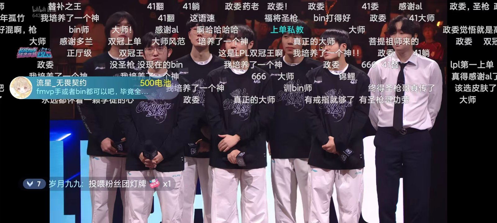
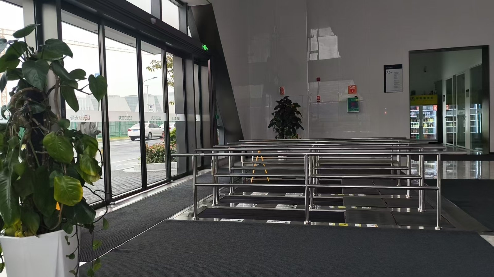
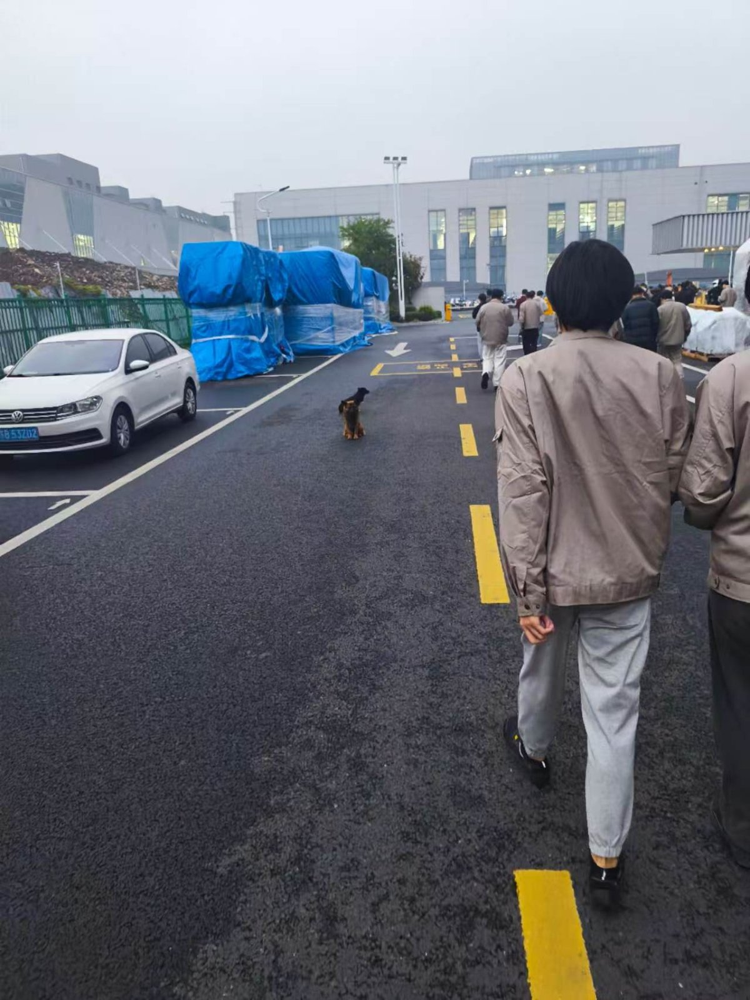
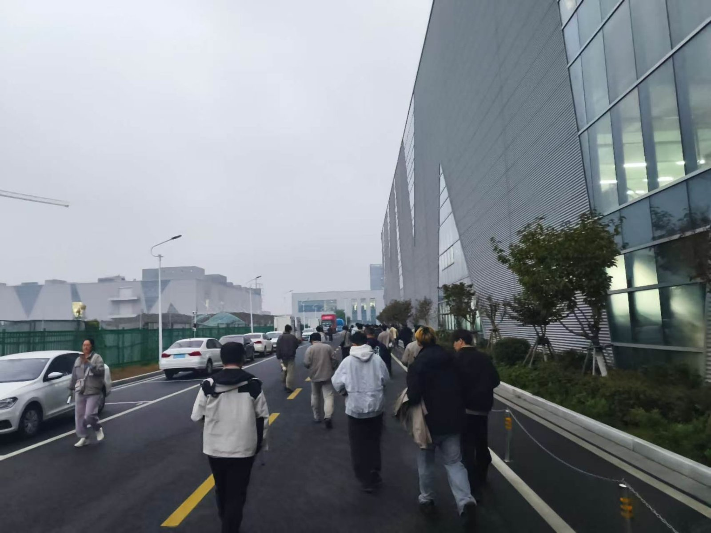
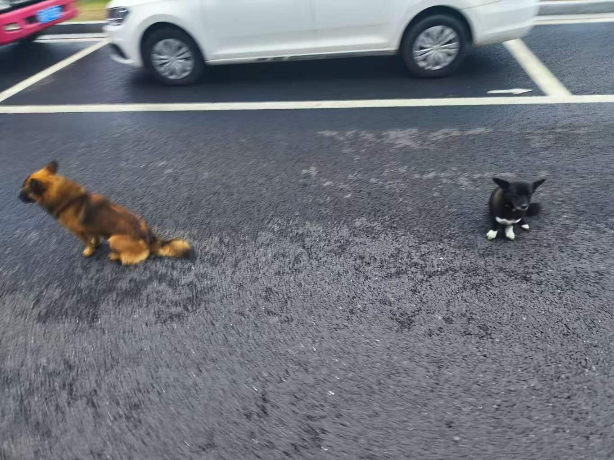
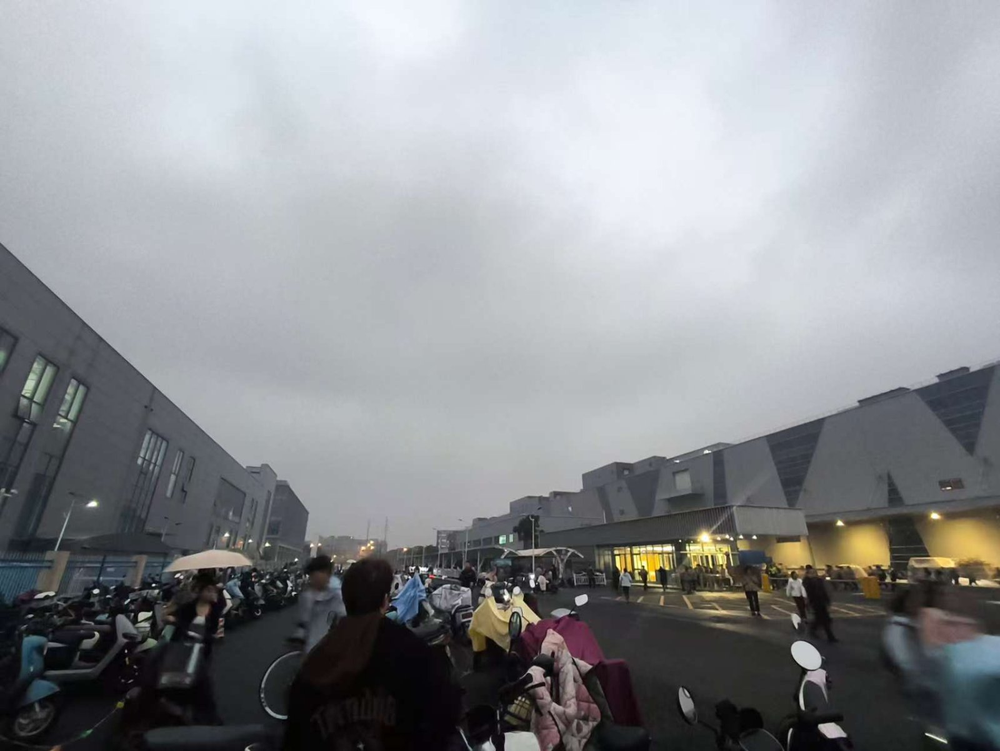
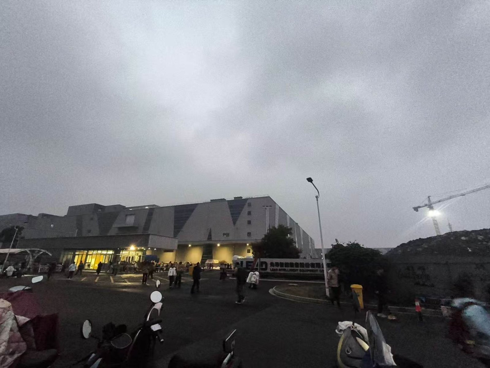
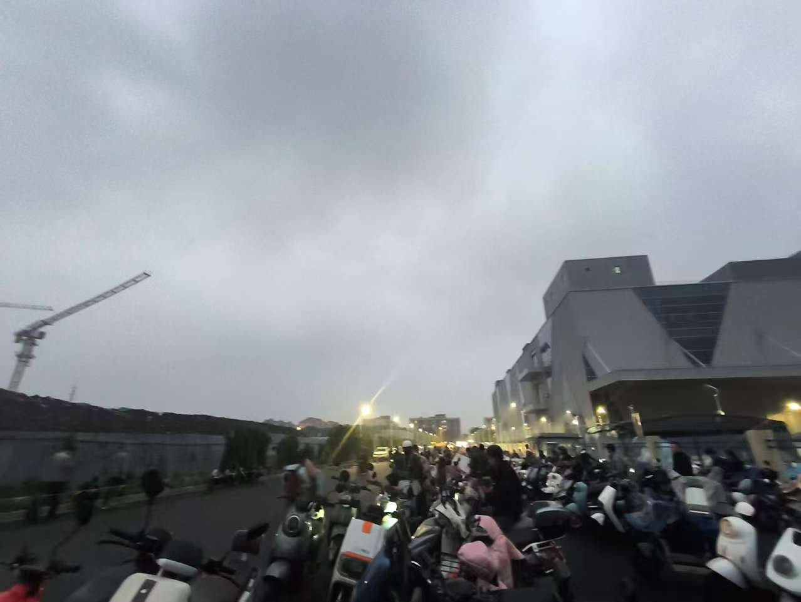
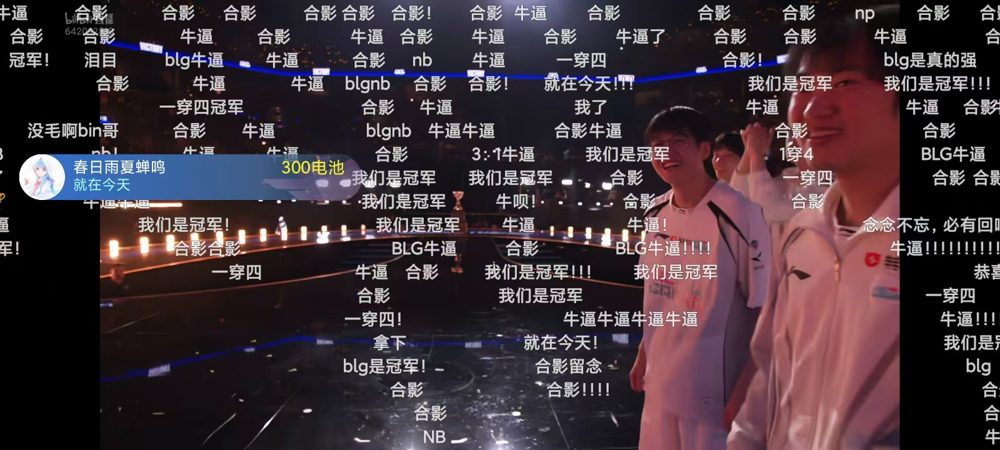
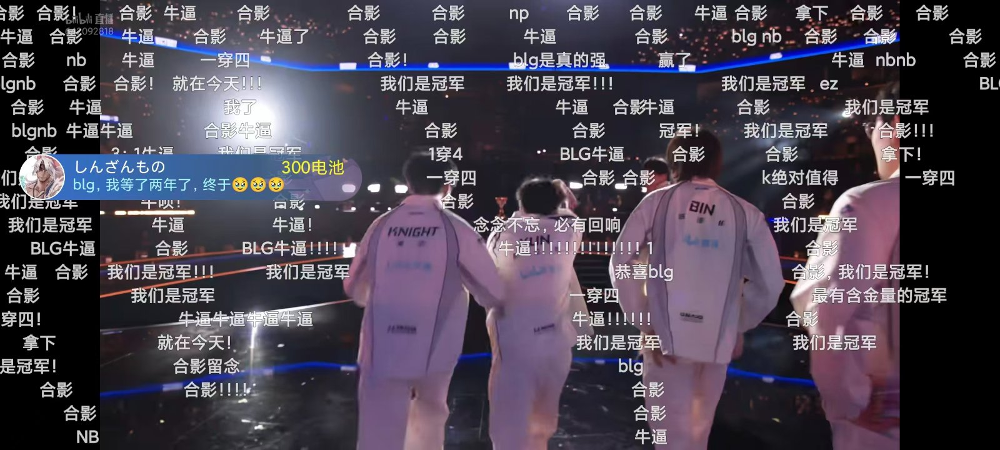
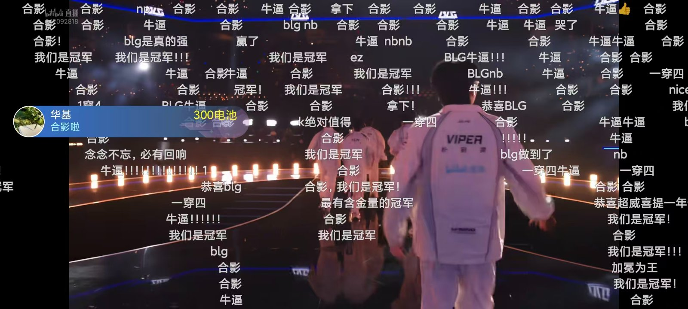

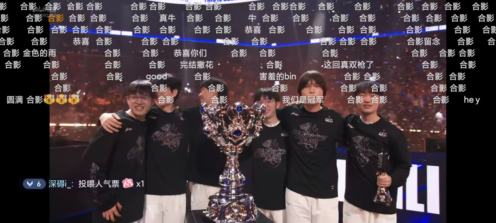
昨天离职了，本来计划20号离职，但天有不测风云，提前让我走了。不过没事就差没几天。就是嫌赚得少，没了。 其实离职的当天以为会很兴奋，但其实并没有。反而有些失落。唐工还在中午吃完饭后给我买了一瓶茉莉蜜茶，谢谢唐工。我给每个人一包坚果，还有原先组的人加一根笔。哈哈。有点小伤感，但没办法，还只是干了两个月，主要是干的久了岂不是难受的要死。哎，可能这就是人生吧。发了工资后我要回我家住，把我的房间改造一下，把左边的沙发搬出去然后买两个一样的桌子，然后拼个大桌，放上显示屏，笔记本，音响。努力专升本！！！加油。翻过一座山还有另一座山。 想想焦虑感又来了，怕自己升不上，还想转行学机器人，可刷到相关环境视频还是担心抢不到岗位，现在用ai学又怕自己学的始终方向不对，怕有错位。不说了，加油戒不掉。 说说现在我的计划吧，刚刚是回家后的计划，说一下现在还没发工资中间这几天的安排，昨天离的职，今天凌晨5点醒了，好像是想要上厕所，忘了。反正睡不着的时候正好想起来s16总决赛，当时想着还要睡就看了一眼比分，1比0，哎blg没赢，我以为lpl会和lck差距很大，以为睡着之后醒来会输，结果没睡着，那干脆看看比赛吧，好家伙，让一追三，哈哈我看的时候全赢，越看越激动，最时间定格在8点05分，blg夺冠成功，我们是冠军！！！爽飞了。后面刷刷视频就又困了，然后睡着了，再醒就是11点了，点了个外卖，然后打打联盟，2点半左右躺床上刷刷抖音就直接到下午，整理了一下衣服，就是现在坐在电脑前闲着干脆写了这篇日记。zzh加班去了，wjs中间被syc叫去梅里古镇去了，我去过，不去了。
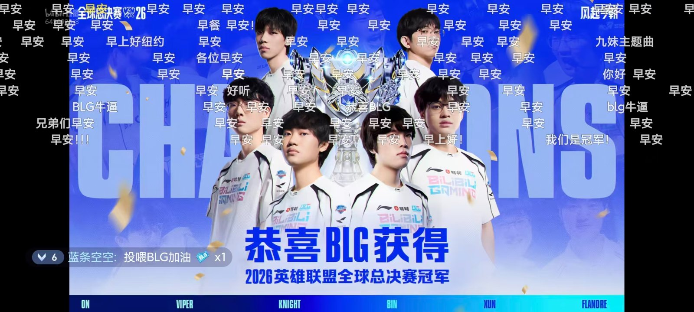
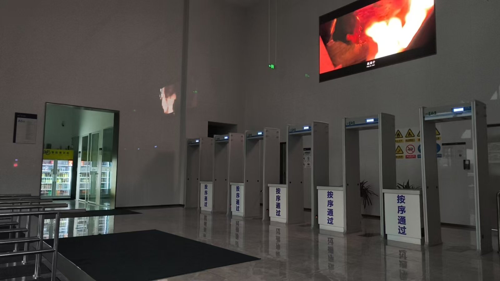
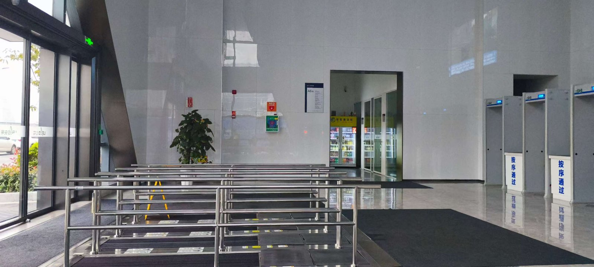
· 完 ·
写于 2026.11.15 18:08